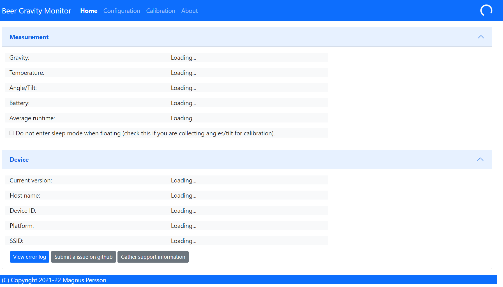
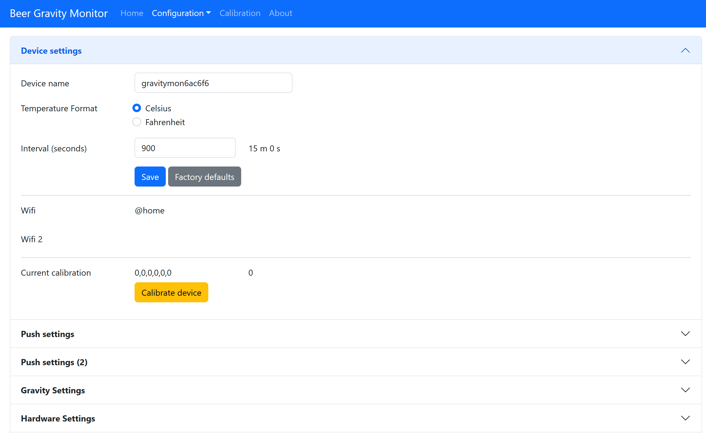
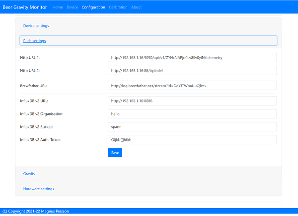
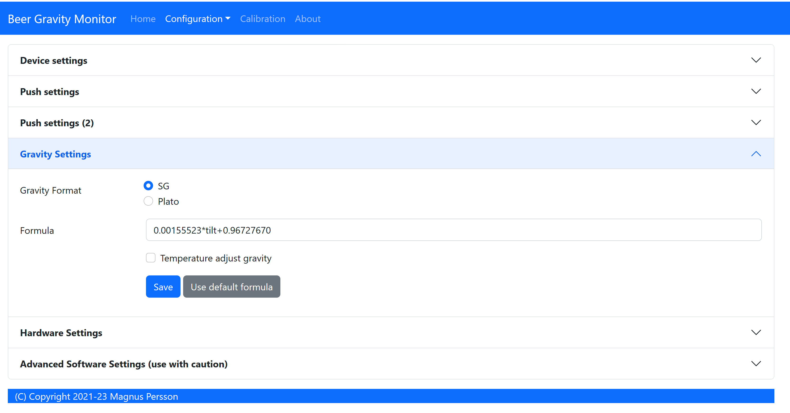
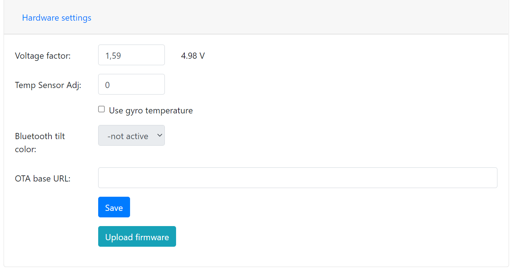
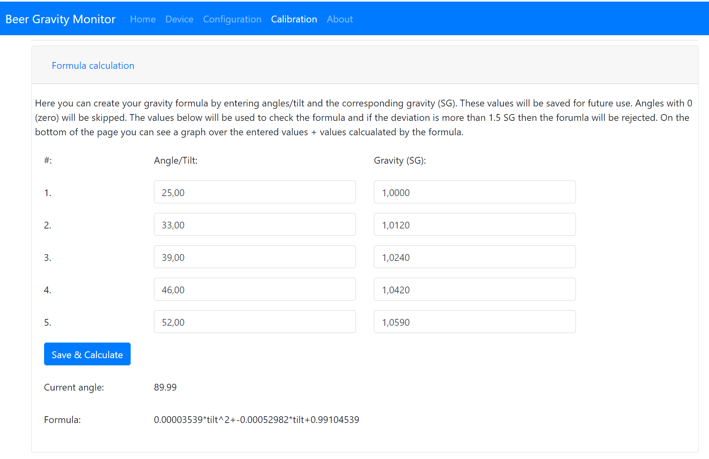

Configuration
The device can operate in two modes and must be in configuration mode in order for the web server to be active.
One of the following conditions will place the device in configuration mode:
Gyro has not been calibrated
Sleep mode has been disabled in the web interface
Placed in horizontal mode 85-90 degrees
Charger connected >4.15V
Status
URL: (http://gravmon.local)
{kind=link}
Configuration is accessed by entering the URL for the device, this will be the mDNS name device.local or the IP adress. The following chapter assumes the device name is gravmon.
The main page shows the device readings; gravity, angle, temperature and battery charge. If the checkbox is active then the device will never go into sleep mode. This is useful if you are collecting angle/tilt for calibration. If this is unchecked the device will change mode as explained before.
Note
If you are connected to the device via a serial console (speed: 115200) you can see the connection sequence and get the Unique ID and IP adress from there.
Device
URL: (http://gravmon.local/device)

Version:
Installed version of the code and html files.
Device name:
This is unique name of the device.
Device ID:
This is unique identifier for the device (ESP8266 id), this is required when using the API as an API Key to safeguard against faulty requests.
Configuration
URL: (http://gravmon.local/config)
Device Setting
{kind=link}
Device name:
This is unique name for the device. It will be used in pushing data as well as mDNS name on the network (<name>.local)
Temperature format:
Choose between Celsius and Farenheight
Interval:
This defines how long the device should be sleeping between the readings when in gravity monitoring mode. You will also see the values in minutes/seconds to easier set the interval. 900s is a recommended interval.
Note
The sleep interval can be set between 10 - 3600 seconds (60 minutes).
Calibration values:
These are calibration data for the gyro. Place the device flat on a table and press the button to save the default orientation values. Without this calibration we cannot calculate the correct angle/tilt.
Note
The device will not go into gravity monitoring mode unless calibrated
Push Settings
{kind=link}
HTTP URL 1:
Endpoint to send data via http. Format used is standard iSpindle format (see format section).
HTTP URL 2:
Endpoint to send data via http. Format used is standard iSpindle format (see format section).
Brewfather URL:
Endpoint to send data via http to brewfather. Format used is defined by brewfather (see format section).
Influx DB v2 URL:
Endpoint to send data via http to InfluxDB. For format (see format section).
Influx DB v2 Organisation:
Name of organisation in Influx.
Influx DB v2 Bucket:
Identifier for bucket.
Influx DB v2 Token:
Token with write access to bucket.
Gravity Settings
{kind=link}
Gravity formula:
Gravity formula is compatible with standard iSpindle formulas so any existing calculation option can be used. Is updated if the calibration function is used.
Temperature correct gravity:
Will apply a temperature calibration formula to the gravity as a second step.
This is the formula used for temperature calibration (temp is in F). Cal = 20C.
gravity*((1.00130346-0.000134722124*temp+0.00000204052596*temp^2-0.00000000232820948*temp^3)/(1.00130346-0.000134722124*cal+0.00000204052596*cal^2-0.00000000232820948*cal^3))
Hardware Settings
{kind=link}
Voltage factor:
Factor used to calcualate the battery voltage. If you get a too low/high voltage you can adjust this value.
Temperature correction:
This value will be added to the temperature reading (negative value will reduce temperature reading).
OTA URL:
Should point to a URL where the .bin file + version.json file is located.
For the OTA to work, place the following files (version.json + firmware.bin) at the location that you pointed out in OTA URL. If the version number in the json file is newer than in the code the update will be done during startup.
Example; OTA URL (don’t forget trailing dash), the name of the file should be firmware.bin
http://192.168.1.1/firmware/gravmon/
Create formula
{kind=link}
Here you can enter up to 5 values (angles + gravity) that is then used to create the formula. Angles equal to zero will be regarded as empty even if there is a gravity reading.

Once the formula is created a graph over the entered values and a simulation of the formula will give you a nice overview on how the formula will work.
REST API
All the API’s use a key called ID which is the unique device id (chip id). This is used as an API key when sending requests to the device.
GET: /api/config
Retrive the current configuation of the device via an HTTP GET command. Payload is in JSON format.
temp-formatcan be eitherCorFgravity-formatis alwaysG(plato is not yet supported)
Other parameters are the same as in the configuration guide.
{
"mdns": "gravmon",
"id": "ee1bfc",
"ota-url": "http://192.168.1.50:80/firmware/gravmon/",
"temp-format": "C",
"brewfather-push": "http://log.brewfather.net/stream?id=Qwerty",
"http-push": "http://192.168.1.50:9090/api/v1/Qwerty/telemetry",
"http-push2": "http://192.168.1.50/ispindel",
"influxdb2-push": "http://192.168.1.50:8086",
"influxdb2-org": "Qwerty",
"influxdb2-bucket": "Qwerty",
"influxdb2-auth": "Qwerty",
"sleep-interval": 30,
"voltage-factor": 1.59,
"gravity-formula": "0.0*tilt^3+0.0*tilt^2+0.0017978*tilt+0.9436",
"gravity-format": "G",
"temp-adjustment-value": 0,
"gravity-temp-adjustment": false,
"gyro-calibration-data": {
"ax": -330,
"ay": -2249,
"az": 1170,
"gx": 99,
"gy": -6,
"gz": 4
},
"angle": 90.93,
"gravity": 1.105,
"battery": 0.04
}
GET: /api/device
Retrive the current device settings via an HTTP GET command. Payload is in JSON format.
{
"app-name": "GravityMon ",
"app-ver": "0.0.0",
"id": "ee1bfc",
"mdns": "gravmon"
}
GET: /api/status
Retrive the current device status via an HTTP GET command. Payload is in JSON format.
temp-formatcan be eitherCorF
Other parameters are the same as in the configuration guide.
{
"id": "ee1bfc",
"angle": 89.86,
"gravity": 1.1052,
"gravity-tempcorr": 1.1031,
"temp-c": 0,
"temp-f": 32,
"battery": 0,
"temp-format": "C",
"sleep-mode": false,
"rssi": -56
}
GET: /api/config/formula
Retrive the data used for formula calculation data via an HTTP GET command. Payload is in JSON format.
a1-a4are the angles/tilt readings (up to 5 are currently supported)g1-g4are the corresponding gravity reaadings (in SG)
{
"id": "ee1bfc",
"a1": 22.4,
"a2": 54.4,
"a3": 58,
"a4": 0,
"a5": 0,
"g1": 1.000,
"g2": 1.053,
"g3": 1.062,
"g4": 1,
"g5": 1
"gravity-formula": "0.0*tilt^3+0.0*tilt^2+0.0017978*tilt+0.9436",
}
POST: /api/config/device
Used to update device settings via an HTTP POST command. Payload is in JSON format.
temp-formatcan be eitherCorF
{
"id": "ee1bfc",
"mdns": "gravmon",
"temp-format": "C",
"sleep-interval": 30
}
POST: /api/config/push
Used to update push settings via an HTTP POST command. Payload is in JSON format.
{
"id": "ee1bfc",
"http-push": "http://192.168.1.50/ispindel",
"http-push2": "",
"brewfather-push": "",
"influxdb2-push": "http://192.168.1.50:8086",
"influxdb2-org": "Qwerty",
"influxdb2-bucket": "Qwerty",
"influxdb2-auth": "Qwerty"
}
POST: /api/config/gravity
Used to update gravity settings via an HTTP POST command. Payload is in JSON format.
gravity-formulakeywordstempandtiltare supported.
{
"id": "ee1bfc",
"gravity-formula": "0.0*tilt^3+0.0*tilt^2+0.0017978*tilt+0.9436",
"gravity-temp-adjustment": "off"
}
POST: /api/config/gravity
Used to update hardware settings via an HTTP POST command. Payload is in JSON format.
{
"id": "ee1bfc",
"voltage-factor": 1.59,
"temp-adjustment": 0,
"ota-url": "http://192.168.1.50/firmware/gravmon/"
}
POST: /api/config/formula
Used to update formula calculation data via an HTTP POST command. Payload is in JSON format.
a1-a4are the angles/tilt readings (up to 5 are currently supported)g1-g4are the corresponding gravity reaadings (in SG)
{
"id": "ee1bfc",
"a1": 22.4,
"a2": 54.4,
"a3": 58,
"a4": 0,
"a5": 0,
"g1": 1.000,
"g2": 1.053,
"g3": 1.062,
"g4": 1,
"g5": 1
}
Data Formats
iSpindle format
This is the format used for standard http posts.
corr-gravityis an extended parameter containing a temperature corrected gravity reading.run-timeis an extended parameter containing the number of seconds the execution took.
{
"name" : "gravmon",
"ID": "2E6753",
"token" : "gravmon",
"interval": 900,
"temperature": 20.5,
"temp-units": "C",
"gravity": 1.0050,
"corr-gravity": 1.0050,
"angle": 45.34,
"battery": 3.67,
"rssi": -12,
"run-time": 6
}
Brewfather format
This is the format for Brewfather
{
"name" : "gravmon",
"temp": 20.5,
"temp-unit": "C",
"battery": 3.67,
"gravity": 1.0050,
"gravity_unit": "G",
}
Influx DB v2
This is the format for InfluxDB v2
measurement,host=<mdns>,device=<id>,temp-format=<C|F>,gravity-format=SG,gravity=1.0004,corr-gravity=1.0004,angle=45.45,temp=20.1,battery=3.96,rssi=-18
version.json
Contents version.json. The version is used by the device to check if the this version is newer. The html files will also be downloaded if the are present on the server. This way it’s easy to upgrade to a version that serve the html files from the file system. If they dont exist nothing will happen, the OTA flashing will still work. If the html files are missing from the file system they can be uploaded manually afterwards.
{
"project":"gravmon",
"version":"0.4.10",
"html": [
"index.min.htm",
"device.min.htm",
"config.min.htm",
"calibration.min.htm",
"about.min.htm"
]
}